정보통신기사(구) (2016-10-01 기출문제)
1과목: 디지털 전자회로
1. 60[Hz]의 정현파 신호가 전파정류기에 입력될 경우 출력신호의 주파수는 얼마인가?
- 10[Hz]
- 30[Hz]
- 60[Hz]
- 120[Hz]
(정답률: 82%)

2. 변압기의 입력단 1차 권선비와 출력단 2차 권선비가 1:2일 때, 출력전압은 입력전압의 몇 배인가?
- 0.5배
- 1배
- 1.5배
- 2배
(정답률: 78%)
3. 스위칭 정전압 제어기에서 제어 트랜지스터가 도통되는 시간은?
- 부하 변동에 대응하는 펄스 유지 기간 동안
- 항상
- 과부하가 걸린 동안
- 전압이 정해진 제한을 넘은 동안
(정답률: 70%)
4. 다음과 같은 증폭기의 교류 입력전압의 크기가 20[mV]일 때 교류 출력전압의 크기는 약 얼마인가?
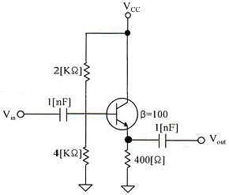
- 20[mV]
- 30[mV]
- 40[mV]
- 50[mV]
(정답률: 61%)
5. 다음 중 FET(Field Effect Transistor)에 대한 설명으로 틀린 것은?
- 입력저항이 수 [MΩ]으로 매우 크다.
- 다수 캐리어에 의해 동작하는 단극성 소자이다.
- 접합트랜지스터(BJT)보다 동작속도가 빠르다.
- 전압제어용 소자이다.
(정답률: 65%)
6. 다음 그림과 같은 부궤환 증폭기 회로의 궤환율은?
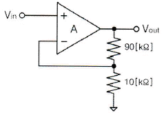
- 10
- 1.1
- 0.5
- 0.1
(정답률: 58%)
7. 다음 그림과 같은 연산증폭 회로의 전압이득(Vo/Vs)은? (단, 증폭기는 이상적이라고 가정하며, R1=R2=R3=30[kΩ], R4=2[kΩ]이다.)
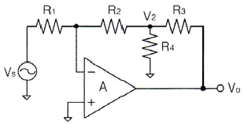
- -14
- -17
- -20
- -23
(정답률: 62%)
8. 발진기에서 기본 증폭기의 전압증폭도가 A이고, 궤환율을 β라고 했을 때 발진이 발생되는 조건은?
- A=100, β=1
- A=100, β=0.1
- A=100, β=0.01
- A=100, β=0
(정답률: 79%)
9. RC 발진회로에서 RC 시정수를 높게 할 경우 발진주파수는 어떻게 변하는가?
- 발진주파수가 높아진다.
- 발진주파수가 낮아진다.
- 무한대가 된다.
- 아무런 변화가 없다.
(정답률: 68%)
10. 400[Hz]의 정현파 변조신호로 주파수 변조를 하였을 때 변조지수가 50이었다. 이 때 최대주파수편이 Δf는 얼마인가?
- 20[kHz]
- 40[kHz]
- 80[kHz]
- 100[kHz]
(정답률: 55%)
11. FM 검파 방식 중 주파수 변화에 의한 전압 제어 발진기의 제어 신호를 이용하여 복조하는 방식은?
- 계수형 검파기
- PLL형 검파기
- 포스터-실리 검파기
- 비 검파기
(정답률: 78%)
12. 다음 중 그림과 같은 변조파형을 얻을 수 있는 변조방식에 대한 설명으로 옳은 것은?
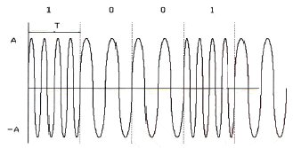
- 정현파의 주파수에 정보를 싣는 FSK 방식으로 2가지 주파수를 이용한다.
- 정현파의 진폭에 정보를 싣는 ASK 방식으로 2가지 진폭을 이용한다.
- 정현파의 진폭에 정보를 싣는 QAM 방식으로 2가지 진폭을 이용한다.
- 정현파의 위상에 정보를 싣는 2위상 편이변조방식이다.
(정답률: 77%)
13. 비안정 멀티바이브레이터 회로에서 콜렉터 전압의 파형은?
- 구형파
- 스텝파
- 임펄스파
- 정현파
(정답률: 74%)
14. RL 회로에서 시정수는 어떻게 정의하는가?
- RL
- L/R
- R/L
- 1/(RL)
(정답률: 67%)
15. 2진수 (101101)2을 10진수로 올바르게 표시한 것은?
- 40
- 45
- 50
- 55
(정답률: 84%)
16. 그레이 코드(Gray Code) 1110을 2진수로 변환하면?
- 1110
- 1100
- 1011
- 0011
(정답률: 77%)
17. RS 플립플롭 호로의 출력 Q 및
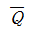
는 리셋(Reset) 상태에서 어떠한 논리값을 가지는가?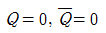
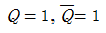
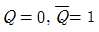
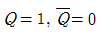
(정답률: 72%)
18. 다음 중 동기식 카운터에 대한 설명으로 옳은 것은?
- 플립플롭의 단수는 동작 속도와 무관하다.
- 논리식이 단순하고 설계가 쉽다.
- 전단의 출력이 다음 단의 트리거 입력이 된다.
- 동영상 회로에 많이 사용된다.
(정답률: 64%)
19. 지연 시간 50[ns]의 플립플롭을 사용한 5단 리플 카운터의 동작 최고 주파수는?
- 1[MHz]
- 4[MHz]
- 10[MHz]
- 20[MHz]
(정답률: 41%)
20. 조합 논리 회로 중 0과 1의 조합으로 부호화를 행하는 회로로 2n개의 입력선과 n개의 출력선으로 구성된 것은?
- 디코더(Decoder)
- DEMUX
- MUX
- 인코더(Encoder)
(정답률: 74%)
2과목: 정보통신 시스템
21. 아날로그 전송 회선에서 BPSK 변조방식을 사용하여 4,800[bps]의 전송속도로 데이터를 전송하려 할 때 필요한 주파수대역폭은? (단, 잡음이 없는 채널일 경우)
- 1,200[Hz]
- 2,400[Hz]
- 4,800[Hz]
- 9,600[Hz]
(정답률: 70%)
22. 전송 지연보다 데이터 무결성(Data Integrity)이 중요한 서비스는?
- 전화 서비스
- 파일 전송 서비스(FTP)
- TV 서비스
- 오디오 스트리밍 서비스
(정답률: 86%)
23. 70개의 노드를 망형으로 연결할 때 필요한 회선 수는?
- 780
- 1,225
- 2,415
- 3,160
(정답률: 88%)
24. PPP(Point-to Point Protocol)에서 IP의 동적 협상이 가능하도록 하는 프로토콜은?
- NCP(Network Control Protocol)
- LCP(Link Control Protocol)
- SLIP(Serial Line IP)
- PPPoE(Point to Point Protocol over Ethernet)
(정답률: 72%)
25. SSL(Secure Socket Layer)은 사이버 공간에서 전달되는 정보의 안전한 거래를 보장하기 위해 넷스케이프사가 정한 인터넷 통신규약 프로토콜을 말한다. 다음 중 OSI 7 계층 중 SSL이 동작하는 계층은?
- 물리 계층
- 데이터링크 계층
- 네트워크 계층
- 전송 계층
(정답률: 68%)
26. 인터넷 프로토콜 중 TCP 및 IP 계층은 ISO의 OSI 모델 7계층 중 각각 어느 계층에 대응하는가?
- 물리 계층 - 데이터링크 계층
- 네트워크 계층 - 세션 계층
- 전송 계층 - 물리 계층
- 전송 계층 - 네트워크 계층
(정답률: 81%)
27. 1분 동안 전송된 총 비트수가 100[bit]이고 이에 부가로 전송된 전송 비트가 20[bit]이다. 이때 이 회선의 코드(부호)효율은 약 얼마인가?
- 80%
- 83%
- 86%
- 89%
(정답률: 71%)
28. 발진지로부터 목적지로 패킷을 전달하는 기능을 수행하는 OSI 7계층은?
- 물리 계층
- 데이터링크 계층
- 네트워크 계층
- 전송 계층
(정답률: 65%)
29. 표준화 단체인 IETF가 인터넷 표준화를 위한 작업문서를 무엇이라 하는가?
- RFC
- NFC
- TFC
- IFC
(정답률: 72%)
30. 다음 중 OSI 7계층과 TCP/IP 프로토콜의 관계에 대한 설명으로 옳지 않은 것은?
- TCP/IP 프로토콜은 OSI 참조모델보다 먼저 개발되었다.
- TCP/IP 프로토콜의 계층구조는 OSI 모델의 계층 구조와 정확하게 일치하지 않는다.
- OSI 모델은 7개 계층으로 TCP/IP 프로토콜은 4개 계층으로 구성되어 있다.
- OSI 모델의 상위 4개의 계층은 TCP/IP 프로토콜에서 응용계층으로 표현된다.
(정답률: 79%)
31. 다음 중 부가가치통신망(VAN)이 일반 통신망에 비해 추가적으로 제공하는 기능으로 볼 수 없는것은?
- 전화서비스 기능
- 정보처리 기능
- 프로토콜 변환 기능
- 통신속도 변환 기능
(정답률: 71%)
32. 2.4[Gbyte]의 영화를 다운로드하려고 한다. 전송회선은 초당 100[Mbps]의 속도를 지원하는데 회선 에러율이 10%라고 가정한다면 얼마의 시간이 소요되는가? (단, 에러에 대한 재전송 및 FEC 코드는 없다고 가정한다.)
- 약 1.5분
- 약 3.5분
- 약 5.5분
- 약 7.5분
(정답률: 79%)
33. VoIP 서비스의 핵심기술로 옳지 않은 것은?
- H.323
- H.264
- SIP
- MGCP
(정답률: 56%)
34. 고속의 무선 및 멀티미디어 통신을 위해 하나의 정보를 여러 개의 반송파로 분할하고 분할된 반송파 사이의 주파수 간격을 최소화하기 위해 직교 다중화해서 전송하는 통신 기술은 무엇인가?
- THSS
- FHSS
- DSSS
- OFDM
(정답률: 87%)
35. 무선통신에서 이용되는 송신기의 조건으로 옳지 않은 것은?
- 발사 주파수의 안정도가 높을 것
- 점유 주파수 대역폭이 가능한 최대일 것
- 전력 효율이 높을 것
- 출력 전력의 변동이 없을 것
(정답률: 76%)
36. 다음 중 마이크로파 통신방식의 특징이 아닌 것은?
- 외부의 영향을 많이 받지만 광대역성이 가능하다.
- 예민한 지향성을 가진 고이득 안테나를 얻을 수 있다.
- 안정된 전파 특성을 갖는다.
- S/N 개선도를 크게 할 수 있다.
(정답률: 57%)
37. CDMA 이동통신 시스템의 무선경로상에서 페이딩 등에 의한 버스트 에러를 방지하기 위하여 송신측에서 데이터를 일정한 규칙에 따라 이산시키는 방법은?
- 심볼 반복
- 인터리빙
- 컨버루션 부호화
- 데이터 스크램블링
(정답률: 74%)
38. 통신망(Network) 관리 중 아래 내용에 해당되는 것은?
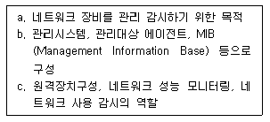
- SNMP(Simple Network Management Protocol)
- TMN(Telecommunications Management Network)
- SMAP(Smart Management Application Protocol)
- TINA-C(Telecommunication Information Network Architecture Consortium)
(정답률: 80%)
39. IPv4 주소체계는 Class A, B, C, D, E로 구분하여 사용하고 있으며 Class C는 가장 소규모의 스트를 수용할 수 있다. Class C가 수용할 수 있는 호스트 개수로 가장 적합한 것은?
- 1개
- 254개
- 1,204개
- 65,536개
(정답률: 85%)
40. 다음 중 TMN(Telecommunication Management Network)에서 정의하고 있는 5가지 관리 기능에 해당하지 않는 것은?
- 성능관리
- 보안관리
- 조직관리
- 구성관리
(정답률: 76%)
3과목: 정보통신 기기
41. 다음 중 통신제어 장치의 설명으로 올바른 것은?
- 중앙처리장치의 부하를 가중시킨다.
- 통신회선의 감시 및 접속, 전송오류검출을 수행한다.
- 회선접속장치를 원격처리장치로 연결한다.
- 중앙처리장치의 제어를 받지 않는다.
(정답률: 81%)
42. 다음 내용에 해당하는 것은?
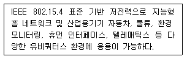
- Bluetooth
- Zigbee
- NFC
- RFID
(정답률: 80%)
43. 최단 펄스시간 길이가 1,000×10-6 [sec]일 때, 이 펄스의 변조속도는?
- 1[baud]
- 10[baud]
- 100[baud]
- 1,000[baud]
(정답률: 87%)
44. 사물에 전자태그를 부착하여 사물의 정보를 자동인식하고 주변 상황 정보를 감지하며 실시간으로 네트워크를 연결하여 그 정보를 관리하는 기술은?
- RFID
- WIFI
- 블루투스
- OFDM
(정답률: 88%)
45. 컴퓨터가 어떤 터미널에 전송할 데이터가 있는 경우 터미널이 수신준비가 되어 있는지를 물어 준비가 된 경우에 터미널로 데이터를 전송하는 것을 무엇이라 하는가?
- 폴링
- 셀렉션
- 링크
- 리퀘스트
(정답률: 79%)
46. 다음 중 멀티 포트 모뎀에 대한 설명으로 가장 알맞은 것은?
- 짧은 거리에서 경비를 절감하기 위해 사용한다.
- 시분할 다중화기와 고속 동기식 모뎀을 이용한다.
- 약간의 전산처리능력을 부가하고 데이터 압축기능이 부가된 것이다.
- 비교적 원거리 통신용으로 개발된 모뎀이다.
(정답률: 68%)
47. 다음 중 시분할 다중화기(Time Division Multiplexer)의 특징에 해당하지 않는 것은?
- 고속 전송 가능
- 내부에 버퍼 기억장치가 필요
- 주로 점대점(Point-to-Pont) 시스템에서 사용
- 좁은 주파수 대역을 사용하는 여러 개의 신호들이 넓은 주파수 대역을 가진 하나의 전송로를 따라서 동시에 전송되는 방식
(정답률: 75%)
48. 어느 센터의 최번시 통화량을 측정하니 1시간 동안에 3분짜리 전화호 100개가 측정되었다. 이 센터의 최번시 통화량은 약 [Erl]인가?
- 4[Erl]
- 5[Erl]
- 6[Erl]
- 7[Erl]
(정답률: 85%)
49. 다음 중 라우터의 이더넷(Ethernet) 인터페이스인 접속 포트에 활용되지 않는 것은?
- TP
- AUI
- DVI
- MAU
(정답률: 80%)
50. 다음 중 방화벽의 패킷필터링 시 패킷 헤더에서 확인할 수 있는 정보에 해당하지 않는 것은?
- 목적지 IP주소
- 출발지 IP주소
- 패킷의 생성시간
- TCP/UDP 소스 포트
(정답률: 73%)
51. 전자교환기에서 사용하고 있는 푸쉬 버튼방식의 전화기는 각각의 두 개의 주파수로 구성된 가청 발신음을 낸다. 다음 중 전화기 버튼의 가청 주파수 연결로 틀린 것은?
- 1 : 697[Hz]+1,209[Hz]
- 5 : 770[Hz]+1,336[Hz]
- 9 : 852[Hz]+1,336[Hz]
- 0 : 941[Hz]+1,336[Hz]
(정답률: 75%)
52. 다음 중 CATV의 기본 구성요소로 틀린 것은?
- 헤드엔드
- 중계전송망
- 가입자설비
- 모뎀
(정답률: 74%)
53. 다음 중 CCTV와 CATV에 대한 설명으로 틀린 것은?
- CCTV는 헤드엔드, 중계전송망, 가입자설비로 구성되어 있다.
- CCTV는 특정 건물 및 공장지역 등 서비스 범위가 한정적이다.
- CATV는 다수의 채널에 쌍방향성 서비스를 제공한다.
- CATV는 방송국에서 가입자까지 케이블을 통해 프로그램을 전송하는 시스템이다.
(정답률: 76%)
54. 국내 지상파 HDTV 방식에서 1채널의 주파수 대역폭은?
- 6[MHz]
- 9[MHz]
- 18[MHz]
- 27[MHz]
(정답률: 83%)
55. 다음 중 무선 송ㆍ수신기에서 송출되는 안테나 공급전력의 정의에 대한 설명으로 적합한 것은?
- 평균전력은 변조에서 사용되는 평균적인 주기와 비교하여 충분히 긴 시간에 걸쳐서 평균된 전력이다.
- 첨두전력은 변조 포락선의 최고 첨두에서의 무선주파수 1주기간의 평균전력이다.
- 반송파전력은 변조상태에서 반송파만을 분리하여 측정한 무선주파수 1[Hz]간의 평균전력이다.
- 규격전력은 종단 출력 진공관 및 종단 출력 TR의 출력규격 값으로서 각 제조사마다 정의한 것이다.
(정답률: 54%)
56. 다음 중 이동통신방식 중의 하나인 LTE(Long Term Evolution) 방식에 대한 설명으로 옳지 않은 것은?
- WCDMA에서 진화한 기술이다.
- CDMA2000 계열 방식이다.
- HSPA+와 더불어 3.9세대 무선이동통신규격이라고 한다.
- OFDM과 MIMO는 이 방식에서 사용되는 핵심기술이다.
(정답률: 73%)
57. 다음 중 위성이 정지궤도에 있기 위한 설명으로 틀린 것은?
- 적도 상공에만 위치하여야 한다.
- 자전주기는 지구의 자전 주기와 일치하는 24시간이어야 한다.
- 위성이 7.91[km/s]의 속도로 움직여야 한다.
- 위성의 높이와 관계되며, 중궤도인 1,500~10,000[km] 내에 위치해야 한다.
(정답률: 69%)
58. 다음 중 디지털 영상회의 시스템 기술에 속하지 않는 것은?
- 동화상 처리
- 음성 처리
- 벡터 양자화
- 송ㆍ수신 주사방식
(정답률: 72%)
59. 다음 중 멀티미디어의 특징으로 틀린 것은?
- 디지털화
- 통합성
- 단방향성
- 상호작용성
(정답률: 89%)
60. 기존 통신 및 방송사업자와 더불어 제3사업자들이 인터넷을 통해 드라마나 영화 등의 다양한 미디어 콘텐츠를 제공하는 서비스를 무엇이라 하는가?
- OTT
- IPTV
- VOD
- P2P
(정답률: 72%)
4과목: 정보전송 공학
61. 다음 중 통신속도와 채널용량에 대한 설명으로 맞는 것은?
- 변조속도는 통신회선에 1초 동안 전송할 수 있는 비트 수이다.
- 신호속도는 1분 동안에 통신회선에 전달할 수 있는 비트 수이다.
- 전송속도는 1분 동안에 통신회선에 전송할 수 있는 문자 수이다.
- 전송로에 단위 시간당 전달할 수 있는 최대 전송률을 Shannon의 채널 용량이라고 한다.
(정답률: 76%)
62. 다음 중 양자화(Quantizing)에 대한 설명으로 알맞은 것은?
- PAM 신호를 0과 1의 이산적인 값으로 바꾸는 과정
- 연속적인 신호파형을 일정시간 간격으로 검출하는 단계
- PAM 신호로부터 원신호를 얻는 과정
- 수신된 디지털 신호를 PAM 신호로 되돌리는 단계
(정답률: 73%)
63. 다음 중 펄스부호변조(PCM) 통신방식의 특징으로 옳지 않은 것은?
- PCM 특유의 고유잡음이 발생한다.
- 누화에 강하다.
- S/N 비가 좋다.
- 변조회로가 단순하고 가격이 저가이다.
(정답률: 74%)
64. 다음 중 직교 진폭변조(QAM) 방식에 대한 설명으로 옳지 않은 것은?
- 진폭과 위상을 혼합하여 변조하는 방식이다.
- 제한된 채널에서 데이터 전송률을 높일 수 있다.
- 검파는 동기 검파나 비동기 검파를 사용한다.
- 신호 합성시 I-CH과 Q-CH이 완전히 독립적으로 존재한다.
(정답률: 62%)
65. -2[dB/km]의 손실을 가지는 케이블의 시작점에서의 전력이 4[mW]였다면 5[km] 뒤에서의 신호의 전력은 얼마인가?
- 0.2[mW]
- 0.4[mW]
- 0.6[mW]
- 0.8[mW]
(정답률: 71%)
66. 다음 중 광섬유의 특징에 대한 설명으로 알맞지 않은 것은?
- 아주 빠른 전송속도를 가지고 있다.
- 손실률이 높다.
- 매우 낮은 전송 에러율을 가지고 있다.
- 네트워크 보안성이 높다.
(정답률: 78%)
67. 다음 중 이동통신망에서 기지국간에 통화 채널을 절체하는 핸드오버 기술 가운데서 소프트 핸드오버(Soft Hand Over)의 가장 큰 장점으로 알맞은 것은?
- 신호대 잡음비(S/N)가 개선된다.
- 기지국(BS)의 서비스 커버리지가 넓어진다.
- 통화 채널 용량이 증가한다.
- 단절이 없이 부드럽게 통화 채널 절체가 이루어진다.
(정답률: 82%)
68. WiMAX가 Fixed WiMAX에서 Mobile WiMAX로 업그레이드되었는데, Mobile WiMAX 규격으로 처음 표준화된 것은 어느 것인가?
- IEEE 802.16d
- IEEE 802.16e
- IEEE 802.16j
- IEEE 802.16m
(정답률: 67%)
69. 다음 중 단방향 통신 방식이 아닌 것은?
- 지상파 TV 방송
- 주파수 공용통신 방식(TRS)
- 라디오 방송
- 무선 호출 방식
(정답률: 73%)
70. 데이터 통신방식 중 Full-Duplex 방식의 가장 큰 장점은?
- 비동기식 전송방식에 적합하다.
- 데이터를 동시에 전송하지 않는다.
- 동시에 송수신이 가능하다.
- 데이터를 병렬로 보낼 수 있다.
(정답률: 82%)
71. 다음 중 전송 제어문자의 내용으로 옳은 것은?
- SYN : 문자 동기 유지
- STX : 헤딩의 시작 및 텍스트의 시작
- ETX : 텍스트의 시작을 표시
- EOT : 전송시작 및 데이터 링크의 초기화 표시
(정답률: 72%)
72. 기호속도가 1[kHz]이고 4개의 기호확률이 1/2, 1/4, 1/8, 1/8일 때 엔트로피율은 얼마인가?
- 1,750[bps]
- 1,850[bps]
- 1,900[bps]
- 2,000[bps]
(정답률: 71%)
73. 다음 중 네트워크의 논리적 기본 구성이 아닌 것은?
- 노드(Node)
- 링크(Link)
- 스테이션(Station)
- 구문(Syntax)
(정답률: 79%)
74. 네트워크 전문가로 어떤 사이트를 방문하여 네트워크 현황 파악을 해보니 PC의 수가 약 90대, 스위치가 2대, 라우터가 1대 운용 중이었다. 하지만 이 사이트는 앞으로 계속 확장되어 1년 이내 PC가 약 250대로 늘어날 예정이다. 이 사이트에는 어떤 클래스의 IP주소를 배정하는 것이 가장 효율적인가?
- 클래스 A
- 클래스 B
- 클래스 C
- 클래스 D
(정답률: 76%)
75. 다음 중 서브넷에 대한 설명으로 틀린 것은?
- IP주소를 보다 효율적으로 낭비 없이 쓰기 위함과 적정한 주소 배정을 위함이 목적이다.
- 서브넷을 만들 때 사용하는 마스크를 서브넷 마스크라고 한다.
- 모든 IP주소에는 서브넷 마스크가 있는데 서브넷을 하지 않은 상태로, 즉 클래스의 기본 성질대로 쓰는 경우에는 디폴트 서브넷 마스크를 사용한다.
- 서브넷을 한 후 IP주소에서 호스트 부분을 전부 ‘1’로 한 것은 그 네트워크 자체 주소가 되고, 전부 ‘0’으로 한 것은 그 네트워크의 브로드캐스트 주소가 된다.
(정답률: 81%)
76. IPv6 해당 그룹 내에 가장 가까운 노드를 연결시키는 네트워크 어드레싱 및 라우팅 방식은?
- 유니캐스트(Unicast)
- 멀티캐스트(Multicast)
- 애니캐스트(Anycast)
- 브로드캐스트(Broadcast)
(정답률: 59%)
77. 어느 특정시간 동안 10,000,000개의 비트가 전송되고, 전송된 비트 중 2개가 오류로 판명되었을 때 이 전송의 비트 에러율은 얼마인가?
- 1×10-6
- 1×10-7
- 2×10-6
- 2×10-7
(정답률: 79%)
78. 네트워크 노드 사이에서의 신뢰성 있고 효율적인 정보의 전달에 목적을 둔 프로토콜은?
- 네트워크 액세스 프로토콜
- 네트워크 내부 프로토콜
- 응용 지향 프로토콜
- 네트워크간 프로토콜
(정답률: 73%)
79. IP 통신망의 경로 지정 통신 규약의 하나로서 경유하는 라우터의 대수(또는 홉)에 따라 최단 경로를 동적으로 결정하는 거리 벡터 알고리즘을 사용하는 프로토콜은?
- RIP(Routing Information Protocol)
- OSPF(Open Shortest Path First)
- BGP(Border Gateway Protocol)
- DHCP(Dynamic Host Configuration Protocol)
(정답률: 83%)
80. 원격지 컴퓨터에 접속해서 파일을 다운로드하거나 업로드할 수 있는 서비스를 제공하는 서버는 어느 것인가?
- 프록시(Proxy) 서버
- FTP 서버
- 텔넷(Telnet) 서버
- POP 서버
(정답률: 75%)
5과목: 전자계산기일반 및 정보통신설비기준
81. 다음 중 IP 주소를 사용하여 동종 또는 이종 링크에 다중 접속을 실현할 수 있는 것은?
- Roaming
- Multihoming
- Hand-Off
- Uni-Casting
(정답률: 76%)
82. 다음 중 자외선을 이용하여 지울 수 있는 메모리는 어느 것인가?
- PROM
- EPROM
- EEPROM
- Flash Memory
(정답률: 80%)
83. 컴퓨터가 8비트 정수 표현을 사용할 경우 -25를 부호와 2의 보수로 올바르게 표현한 것은?
- 11100111
- 11100011
- 01100111
- 01100011
(정답률: 64%)
84. 다음 중 2진수 덧셈연산에서 오버플로우(Overflow)가 되는 조건은?
- 두 수에서 부호 자리의 값이 서로 같을 때이다.
- 두 수에서 부호 자리의 값이 서로 다를 때이다.
- 부호자리에서 캐리(Carry)가 있고, 부호 다음 자리(MSB)가 캐리(Carry)가 있을 때이다.
- 부호자리에서 캐리(Carry)가 있고, 부호 다음 자리(MSB)가 캐리(Carry)가 없을 때이다.
(정답률: 60%)
85. 메모리관리에서 빈 공간을 관리하는 Free 리스트를 끝까지 탐색하여 요구되는 크기보다 더 크되, 그 차이가 제일 작은 노드를 찾아 할당해주는 방법은?
- 최초적합(First-Fit)
- 최적적합(Best-Fit)
- 최악적합(Worst-Fit)
- 최후적합(Last-Fit)
(정답률: 87%)
86. 다음 중 컴퓨터의 운영체제에서 로더(Loader)의 주요 기능이 아닌 것은?
- 프로그램과 프로그램 간의 연결(Linking)을 수행한다.
- 출력 데이터에 대해 일시 저장(Spooling) 기능을 수행한다.
- 프로그램이 실행될 수 있도록 번지수를 재배치(Relocation)한다.
- 프로그램 또는 데이터가 저장될 번지수를 계산하고 할당(Allocation)한다.
(정답률: 78%)
87. 몇 개의 관련 있는 데이터 파일을 조직적으로 작성하여 중복된 데이터 항목을 제거한 구조를 무엇이라 하는가?
- Data File
- Data Base
- Data Program
- Data Link
(정답률: 85%)
88. 다음 중 컴파일러(Compiler)에 대한 설명으로 옳은 것은?
- 고급(High Level) 언어를 기계어로 번역하는 언어번역 프로그램이다.
- 일정한 기호형태를 기계어와 일대일로 대응시키는 언어번역 프로그램이다.
- 시스템이 취급하는 여러 가지의 데이터를 표준적인 방법으로 총괄하는 프로그램이다.
- 프로그램과 프로그램 간에 주어진 요소(Factor)들을 서로 연계시켜 하나로 결합하는 기능을 수행하는 프로그램이다.
(정답률: 78%)
89. 다음 중 RISC(Reduced Instruction Set Computer)에 대한 설명으로 틀린 것은?
- CISC(Complex Instruction Set Computer)는 RISC보다 많은 양의 레지스터를 필요로 한다.
- 명령어의 길이가 일정하다.
- 대부분의 명령어들은 한 개의 클럭 사이클로 처리된다.
- 소수의 주소 기법(Addressing Mode)을 사용한다.
(정답률: 61%)
90. 인터럽트의 우선순위를 바르게 나열한 것은?
- 전원 이상 → 기계착오 → 외부 신호 → 입ㆍ출력 → 명령의 잘못 사용 → 슈퍼바이저 호출(SVC)
- 슈퍼바이저 호출(SVC) → 전원 이상 → 기계착오 → 외부 신호 → 입ㆍ출력 → 명령의 잘못 사용
- 슈퍼바이저 호출(SVC) → 입ㆍ출력 → 외부 신호 → 기계착오 → 전원 이상 → 명령의 잘못 사용
- 기계착오 → 외부 신호 → 입ㆍ출력 → 명령의 잘못 사용 → 전원 이상 → 슈퍼바이저 호출(SVC)
(정답률: 73%)
91. 다음 중 방송통신의 원활한 발전을 위하여 새로운 방송통신 방식을 채택하는 기관은?(관련 규정 개정전 문제로 여기서는 기존 정답인 3번을 누르면 정답 처리됩니다. 자세한 내용은 해설을 참고하세요.)
- 한국정보통신기술협회
- 국립전파연구원
- 미래창조과학부
- 한국정보화진흥원
(정답률: 72%)
92. 방송통신설비의 제거명령을 위반한 자에 대한 벌칙규정은?
- 1년 이하의 징역 또는 1천만원 이하의 벌금에 처한다.
- 2년 이하의 징역 또는 2천만원 이하의 벌금에 처한다.
- 3년 이하의 징역 또는 3천만원 이하의 벌금에 처한다.
- 5년 이하의 징역 또는 5천만원 이하의 벌금에 처한다.
(정답률: 80%)
93. 보편적 역무에 제공하는 전기통신사업자를 지정할 때 미래창조과학부장관이 고려해야 할 사항이 아닌 것은?
- 전기통신사업자의 기술 능력
- 보편적 역무의 사업 규모
- 보편적 역무의 요금 수준
- 보편적 역무의 가입자 수
(정답률: 65%)
94. 다음 중 전기통신사업의 구분으로 틀린 것은?
- 기간통신사업
- 별정통신사업
- 부가통신사업
- 정보통신사업
(정답률: 65%)
95. 전기도체, 절연물로 싼 전기도체 또는 절연물로 싼 것의 위를 보호피막으로 보호한 전기도체 등으로서 300볼트 이상의 전력을 송전하거나 배전하는 전선을 무엇이라 하는가?
- 전력선
- 통신선
- 통신케이블
- 강전류전선
(정답률: 75%)
96. 다음 중 전송설비 및 선로설비의 보호대책과 관계가 없는 것은?
- 전송설비와 선로설비간의 분계점을 명확히 한다.
- 다른 사람이 설치한 설비에 피해를 받지 않도록 한다.
- 설비 주위에 설비에 관한 안전표지를 한다.
- 강전류전선에 대한 보호망이나 보호선을 설치한다.
(정답률: 75%)
97. 다음 중 옥내에 설치하는 닥트의 요건으로 옳지 않은 것은?
- 유지보수를 위한 충분한 공간 확보
- 선로 받침대를 60[cm] 내지 150[cm]의 간격으로 설치
- 닥트 내부에는 누전위험이 있으므로 전기콘센트 미설치
- 수직으로 설치된 닥트는 작업을 용이하게 할 수 있는 디딤대 설치
(정답률: 76%)
98. 다음 중 전기통신설비를 공동 구축할 수 있는 대상은?
- 국가 또는 지방자치단체와 국민 사이
- 전기통신사업자와 전기통신이용자 사이
- 기간통신사업자와 자가통신사업자 사이
- 기간통신사업자와 기간통신사업자 사이
(정답률: 69%)
99. 다음 중 정보통신공사의 설계 및 감리에 관한 설명으로 옳지 않은 것은?
- 감리원은 설계도서 및 관련 규정에 적하하게 공사를 감리해야 한다.
- 설계도서를 작성한 자는 그 설계도서에 서명 또는 기명날인하여야 한다.
- 발주자는 용역업자에게 공사의 설계를 발주하고 소속 기술자만으로 감리업무를 수행하게 해야 한다.
- 공사를 설계하는 자는 기술기준에 적합하게 설계해야 한다.
(정답률: 82%)
100. 다음 중 총 공사금액에 따른 감리원 배치기준으로 옳지 않은 것은?
- 30억원 이상 70억원 : 고급감리원 이상의 감리원
- 70억원 이상 100억원 : 특급감리원
- 5억원 미만 : 중급감리원 이상의 감리원
- 100억원 이상 : 기술사
(정답률: 70%)